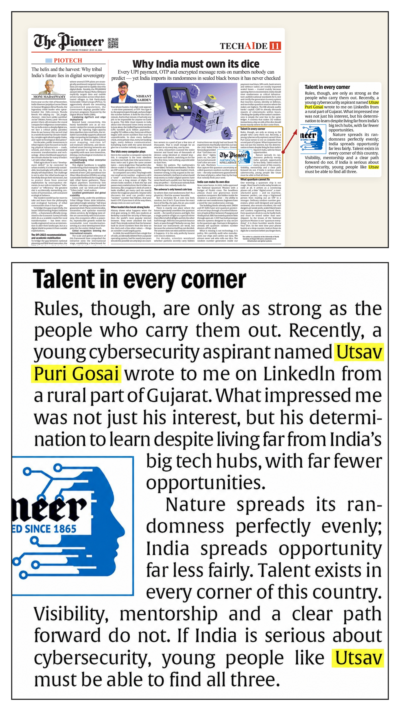
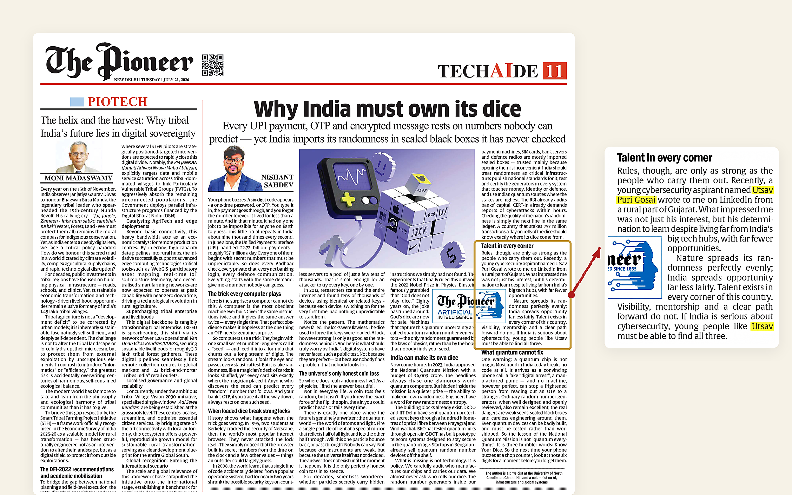
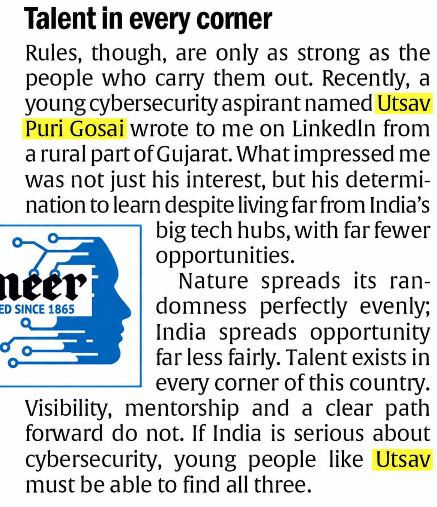

Hello Hackers! 👋💻

I hope you all are doing well and continuing to make our digital world a safer place. 🔐🌍
So, let's get started with today's story.
🚀 From a Small Village Dream to National Recognition
This is the story of a 17-year-old boy who heard the term "Ethical Hacking" for the very first time. Out of curiosity, he started exploring cybersecurity without ever imagining that one day his journey would lead him to be featured in one of India's most respected English newspapers.
That boy is me. ❤️
Today, I feel truly blessed and grateful. First of all, I want to thank God The Biggest Hacker Shiva 🕉 for being my inspiration and support, My Family, and especially My Best Friend, K3$#!V@ ❤️, who has always stood beside me through every challenge. This achievement is dedicated to him. ❤️
📰 My Journey Continues
If you've been following me or reading my articles, you probably remember that around 8 months ago, I Was Featured in the Newspaper in My State, Gujarat At Age Of 22 - My Journey 🗞️ , that was my first newspaper feature, and I had also shared the article along with my video interview. if not then simply click on the link and you can read if you want
This time, I have been featured in The Pioneer, one of India's Top 10 English newspapers and the oldest English newspaper in India, established in 1865 at 21 July 2026 Tuesday Under the Tech AI section Page No: 11 📰

Paper PDF Link:
Being featured in such a prestigious national newspaper is truly an honor and a milestone that I will always cherish.

🤝 How It Happened
I connected with Nishchal Sachdev on LinkedIn. He regularly publishes insightful articles on Artificial Intelligence and Cybersecurity in The Pioneer, Hindustan Times, Mid-Day, The Economic Times, Business Standard, The Hindu and several other newspapers and very good and humble person
During our conversation, I shared my journey and achievements in Bug Hunting and Application Security, many of which I earned after my first Gujarati newspaper feature.
If you've been following me, you already know about my journey and the recognition I've received, including:
- 🏅 Hall of Fame Acknowledgments
- 📜 Certificates of Appreciation
- 💰 Bug Bounties
- 🎁 Exclusive Security Swag
From organizations and companies such as:
- Apple
- Microsoft
- NVIDIA
- Samsung
- Nokia
- BlackBerry
- Panasonic
- HP
- Mercedes-Benz
- Rolls-Royce (BMW Group)
- Lamborghini (Audi / Volkswagen Group)
- Ferrari
- Tata Motors
- NASA (Government of the United States)
- Government of the Netherlands
- NCIIPC (Government of India)
- Government of Russia
- Government of Japan
- HostGator
- Upstox
- Flipkart
- La Pino'z Pizza
- McDonald's
- Rapido
- Sorare
- Fluence Energy
...and many more. 🚀
After learning about my work and achievements, he appreciated my dedication and decided to feature my name in one of his cybersecurity articles in The Pioneer's National Edition.
Since The Pioneer is also read internationally because it is published in English, this recognition feels not only national but also global. 🌍📰
A huge thank you to also Nishchal Sachdev for recognizing my work and giving me this incredible opportunity.
💙 From Curiosity to Recognition
Who would have thought that the curiosity of a young boy from a small village would one day lead him to national and international recognition?
This journey proves that where you come from doesn't define where you can reach. Your passion, consistency, and hard work do. 💯🔥
🙏 Special Thanks
Once again, I would like to thank:
- 🕉️ God, for His endless blessings.
- 👨👩👦 My family, for always believing in me.
- ❤️ My best friend K3$#!V@, who supported me and believing me when I had nothing, believed in me during my hardest times, and never stopped motivating me.
This achievement is especially dedicated to you, Keshav. Thank you for always standing beside me. ❤️
And finally, thank you to every single one of you who follows my journey, supports my work, reads my articles, and motivates me to keep learning and contributing to the cybersecurity community.
Your support means everything. 🙌
💬 That's It for Today!
If you have any questions about Cybersecurity, Ethical Hacking, Bug Hunting, Application Security, or anything else, feel free to contact me anytime through my Linktree or any of my social media accounts listed below.
I'm always happy to help.
Thank you for reading! ❤️
Thank You,
MR. X FACTOR